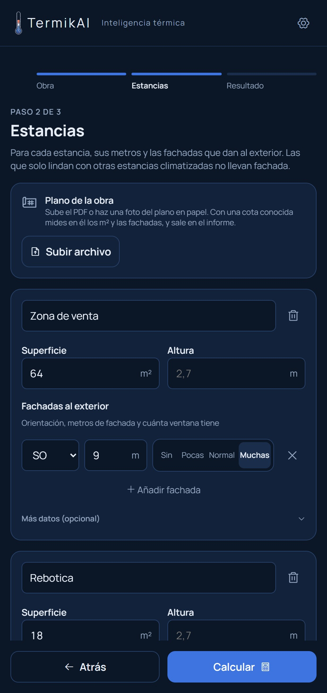
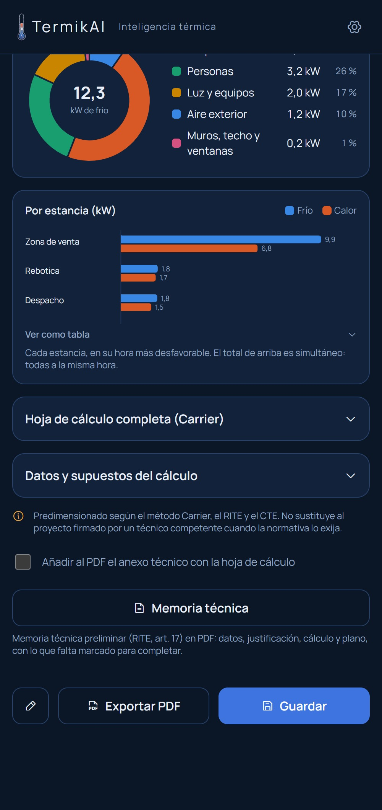

Radia
Zoru erradiatzailea: zirkuituak, emariak eta planoak, UNE-EN 1264, RITE eta CTEren arabera.

BTIPro
Hiru urrats, kalkulu-orririk gabe. Instalatzaileak ikusten duena sartzen du, eta gainerakoa aplikazioak ondorioztatzen du.
3D eszena kargatzen…
Bilbo · iraila · 18:4031 °C egongelan.
Teknikaria iristen daTermikAI irekitzen du bisitan.
PlanotikHormak, 3Dn.
OrientazioaOrdu bakoitzeko eguzkia.
EmaitzaGela bakoitzaren karga.
BTI ProBi minutu. Txosten argi bat.
Irristatu ikusteko
Herria, erabilera eta urtea. Urtearekin, isolamendua ondorioztatzen du.

Metroak eta fatxadak, edo planoaren argazki baten gainean neurtuta.

Kilowattak, karga nondik datorren eta bezeroarentzako PDFa.

Aurredimentsionamendu bat da: ez du ordezten teknikari eskudun batek sinatutako proiektua, araudiak hala eskatzen duenean. Aplikazioak txosten bakoitzean esaten du.
Laster BTI Pron
Instalatzaileentzako tresna gehiago, zorroztasun berarekin: iturria duen araudia eta ulertzen diren emaitzak.
Zoru erradiatzailea: zirkuituak, emariak eta planoak, UNE-EN 1264, RITE eta CTEren arabera.
Fotovoltaikoa teilatuan: panelak non sartzen diren, zenbat ekoizten duten eta zenbat aurrezten den.
Planotik kalkulura eta instalazioaren 3D eredura, urrats bakarrean.
Eramateko
Eskaneatu mugikorrarekin edo sakatu irekitzeko.